| |
|
METRAJ RAPORLARI
|
Özel metraj raporları şunlardır: Genel Bilgiler
Enkesit Metrajları Kısmi Enkesit Metrajları Kesimlere Göre Hacim Yüzdeleri Ara Hacimler Toprak Hacimleri Diyagramı (ve kırmızı kot farkları, bitki toprağı sıyırma ve kamulaştırma) Toplam Yüzdeler Ağırlık Merkezlerine Göre Metraj Bitki Toprağı Sıyırma Bitki Toprağı Sıyırma ve Şev Düzeltme Alanları Uzunluklara Göre Alanlar Bitkilendirme Alanları Kazıma ve Söküm Branş eklenmiş bir dosyadan Toprak İşleri Hacimleri Üstyapı Katmanları Metrajları Üstyapı Astar Alanları Şev Düzeltme Alanları Geotekstil Alanları Kaya Şev Alanları Dolgu Tabakası Alanı Kazı Seviyeleri Alanı 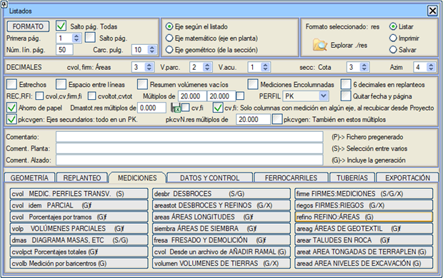
Genel Bilgiler Bu raporlar, güzergahların enkesit dosyalarına dayanarak, hem kısmi hem de toplam metrajlara ve yüzeylere atıfta bulunur. Kağıt tasarrufu seçeneği etkinse, bu raporların davranışını dikkate almak gerekir.  cv, fi: Proje'den yeniden metrajlandırırken, sadece herhangi bir güzergahta metrajı olan sütunlar. PROJE'den yeniden metrajlandırıldığında üretilen cvN.res ve fiN.res raporları, en az bir güzergahta sıfırdan farklı verilere sahip sütunları içerir. pkcvgen İkincil Güzergahlar:Tümü tek bir KM'de: pkcvgen raporunda, ikincil güzergahların hacimleri, cvtoto.res tarzında, tek bir km'de ana güzergaha enjekte edilir. Bu güzergahların dökülme konileri, tünel ağızları ve birleşim yerlerinin metrajları aynı km'ye enjekte edilir. cv, fi: Proje'den yeniden metrajlandırırken, sadece herhangi bir güzergahta metrajı olan sütunlar. PROJE'den yeniden metrajlandırıldığında üretilen cvN.res ve fiN.res raporları, en az bir güzergahta sıfırdan farklı verilere sahip sütunları içerir. pkcvgen İkincil Güzergahlar:Tümü tek bir KM'de: pkcvgen raporunda, ikincil güzergahların hacimleri, cvtoto.res tarzında, tek bir km'de ana güzergaha enjekte edilir. Bu güzergahların dökülme konileri, tünel ağızları ve birleşim yerlerinin metrajları aynı km'ye enjekte edilir.Bu rapor, Proje Hesaplaması ile oluşturulur. pkcvgen.res raporu, pkcvN.res raporları için belirtilen katları da kullanabilir. Bu durumda, güzergah numarası ve ikincil km sıfıra ayarlanır, çünkü o kısmi kesimde birkaç güzergah yer alabilir. Not: Aşağıdaki gibi sütunlu metraj raporları için:
Bu raporları (cvol.res, firme.res), kullanıcı KM'sini yazdıracak şekilde yapılandırabilirsiniz. (ENKESİT: KM/Kazık No/Kullanıcı KM). Bu, cv_N.xlsx ve fi_N.xlsx raporlarını da etkiler. Ve ayrıca Raporlar->Dışa Aktar->Bolivya/Şili/Peru->Metraj_N.txt ve Metraj_N.xlsx
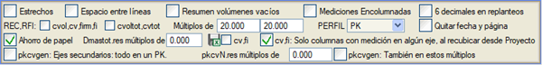
Enkesit Metrajları ENKESİT METRAJLARI raporları (cvol.res), bir güzergahın enkesitleri üzerindeki metrajları ve toplam kübajlarını içeren cvol#.res dosyalarıdır (# güzergah numarasıdır). Bu rapor, tüm boykesit hesaplandığında veya ENKESİT (ALZADO) menüsünün yeniden metrajlandırma seçeneğiyle oluşturulur. Proje PROJE penceresinden hesaplandığında, aktif güzergahların birleşik metrajlarının bir özetini ve ardından yukarıda belirtilen cvol1.res, cvol2.res,... dosyalarının bir kopyasını içeren cvol0.res raporu oluşturulur. Ayrıca, bu PROJE penceresinden tam hesaplama yapıldığında ve Hacimleri yansıtmak için güzergah alanında aktif bir güzergah numarası varsa (ana güzergah görevi gören güzergah), ek olarak bir dizi birleşik rapor oluşturulur. Rapor başlıklarının metinlerini dosyalarda düzenleme ve kaydetme imkanı  . . Katlar kutucuğu aracılığıyla, cvol, cv, firm, fi,... raporları belirli bir değerin katları olarak oluşturulabilir. Ayrıca, sağındaki kutucuk da etkinleştirilirse, hesaplama bölgesinde tanımlanan KM'ler de yazdırılır. Bu KM'lerde enkesitlerin enterpole edilmiş olması gerekir. Birleşik Raporlar cvoltot.res Bu raporlar arasında, her bir güzergah için hacimlerin toplam özetini sonunda içeren, tüm güzergahların metrajlarını içeren cvoltot.res bulunmaktadır. Eğer raporun GÜZERGAH sütununda herhangi bir veri görünmüyorsa, bu, bu ana güzergahın bir enkesitidir. Aksi takdirde, tam metrajları, KM'lerinin ağırlık merkezinin izdüşümüne göre bir enkesitte ana güzergaha enjekte edilen başka bir güzergahtır. O zaman GÜZERGAH sütununda bu güzergahın numarası ve ardından ana güzergahın enkesitlerinin KM'leri arasında sıralanmış olarak yansıtıldığı KM görünür. Branşın toplam hacimleri bu KM'de ara hacimler olarak görünür ve ana güzergahın birikimli hacimlerine ve toprak hacimleri diyagramına eklenir. Bu rapor, ana güzergahın sonundan sonraki bir KM'ye yansıtılan güzergahları (son KM ile ilişkilendirilirler) ve ayrıca kesişimlerden, dönel kavşaklı birleşim yerlerinden ve dökülme konilerinden gelen kübajları da içerir (kesişimin enjekte edildiği enkesit "+" işaretiyle ve bir dökülme konisinin enjekte edildiği yer "c" ile görünür). 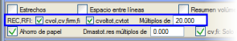Hem bu rapor (cvoltot.res) hem de cvtot.res için, sadece belirli bir değerin katı olan enkesitleri yazdırma seçeneği dikkate alınır (Raporlar genel menüsündeki kutucuk). Bu, diğer güzergahların, birleşim yerlerinin veya dökülme konilerinin enjeksiyonlarını etkilemez. Varsayılan olarak, bu raporları belirli bir değerin katları olarak oluşturmak için iki "tik"  etkinleştirilmiş olarak bulacağız ve gerekirse herhangi birini devre dışı bırakabiliriz. etkinleştirilmiş olarak bulacağız ve gerekirse herhangi birini devre dışı bırakabiliriz.
cvolejes.res Bu birleşik raporlar arasında, en az bir güzergahta pozitif bir değere sahip her bir metraj için bir sütun ve her bir güzergah için bir satır kullanarak, güzergahlara göre metrajların bir özetini içeren cvolejes.res de bulunmaktadır. Raporun sonunda toplam değeri içeren bir satır görünür. Devre dışı bırakılmış gruplarda bulunan veya proje tablosunda [HES] ve [YEN] seçenekleri etkinleştirilmemiş güzergahların metrajları görünmeyecektir. cvolgru.res Bu rapor, ejes.res ve cvolejes.res raporlarının bir karışımıdır ve projenin tüm güzergahlarını gruplara göre gruplandırılmış olarak içerir (sadece aktif gruplar) ve numarası, adı, başlangıç ve bitiş KM'leri (hesaplama bölgelerine göre), ayrıca her bir güzergahın, her bir grubun ve aktif grupların toplamının metrajları listelenir. PROJE menüsünden tam bir hesaplama yapıldığında ve Hacimleri yansıtmak için güzergah kutucuğunda aktif bir güzergah numarası göründüğünde, cvolejes.res raporuyla aynı anda oluşturulur. Rapor ayrıca .xlsx formatında da oluşturulur. Hesap Tabloları İçin Formatlanmış Raporlar
Kısmi Enkesit Metrajları 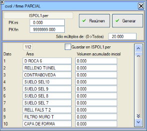KISMİ ENKESİT METRAJLARI raporu (cvol#.res), herhangi bir enkesit dosyasında ve kullanıcı tarafından belirtilen bir kesimde bulunan hacimleri listeler. Toplamlarla toplanacak başlangıç kübajlarını vermeyi ve ara enkesitlerdeki verileri listelememek için bir eşit aralık belirtmeyi sağlar. Eğer bu eşit aralık 0 ise, istenen KM aralığındaki tüm enkesitler listelenir. Oluştur butonuna basıldığında, aktif güzergahların cvol0.res ve firme0.res raporları (seçilen ISPOL#.per veya ISFIR#.per'e bağlı olarak, # güzergah numarasıdır) oluşturulur; bu raporlar tüm raporları içerir. Dosyanın başında, tüm aktif güzergahların toplam hacimlerinin bir özeti yazılır. Sadece bu özeti yazmak için Oluştur yerine Özet butonuna basılabilir. Kısmi bir cvol.res oluşturmak için bir ISFIR#.res dosyası seçildiğinde (# güzergah numarasıdır), program, ilgili güzergahın .vol dosyasının üstyapı katmanı verilerinde "tonajların" listelenip listelenmeyeceğini analiz eder ve o .vol'de tanımlanan ilk üstyapı kesitinin yoğunluk verilerini kullanır. Bir enkesit dosyası seçildiğinde, başlangıç KM'si için önceden belirlenen metraj değerlerini o dosyaya kaydetmek mümkündür. Bu seçenek, aynı enkesit dosyasında bulunan toprak hacimleri diyagramının değerini de yeniden hesaplar. Bu şekilde, bir ispol#.per dosyasının (# güzergah numarasıdır) başlangıcında belirli değerler önceden belirlenirse ve bu dosya yeniden hesaplanmadığı veya yeniden metrajlandırılmadığı sürece, toprak hacimleri diyagramı ve metrajların birikimli hacimlerinin göründüğü raporlarda ve paftalarda bu değiştirilmiş başlangıç değerleri dikkate alınacaktır. Kesimlere Göre Hacim Yüzdeleri 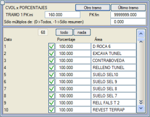KESİMLERE GÖRE HACİM YÜZDELERİ raporu (cvol#.res), tamamlanmış iş raporu elde etmeyi sağlar. Bir .vol dosyası seçilmesini ister, onu analiz eder ve içerdiği metrajların adlarını ve her birine bir tamamlanma yüzdesi atama veya onay kutusu aracılığıyla onu engelleme imkanı sunan bir menü gösterir. Aynı şekilde, kesimin bir başlangıç ve bir bitiş KM'si tanımlamaya olanak tanır. Eğer [Diğer kesim] seçeneğine basılırsa, sonraki kesimleri tanımlamaya devam etmeyi sağlar. Eğer [Son kesim] seçeneğine basılırsa, rapor mevcut kesimin bitiş KM'sinde kapatılır. Ayrıca, sadece belirli bir değerin katı olan KM'lerin listelenmesi belirtilebilse de, program ara ve toplam hacim hesaplaması için kesim içindeki kat olmayan enkesitleri dikkate almaya devam eder. Eğer burada verilen değer -1 ise, sadece her bir kesim için bir özet ve bir toplam özet oluşturulur ve 0 değeri verilirse, tüm KM'ler listelenir. Boru hattı güzergahları durumunda, yukarıdaki diyalog kutusu ayrıca, KIRMIZI KOTLAR menüsündeki boru tanım KM'lerine göre kesimler için KM'leri çıkaran Borulara göre KM'ler seçeneğini etkinleştirmeyi sağlar. Ara Hacimler 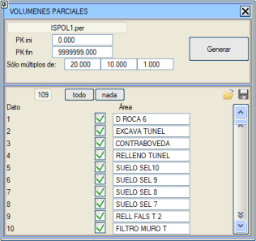ARA HACİMLER raporu (volp.res), .per dosyasını ve hangi metrajların listelenmek istendiğini sorar. Aynı şekilde, kesimin bir başlangıç ve bir bitiş KM'si tanımlamaya olanak tanır. Tüm aktif güzergahlar seçildiğinde, program tüm güzergahları, dökülme konilerini ve kesişim birleşim yerlerini içeren bir volptot.res dosyası oluşturmaya izin verir, ancak daha önce PROJE menüsünden hesaplanmış olması gerekir (hacimleri yansıtmak için güzergah kullanılır). Aynı şekilde, tüm ISPOL#.per veya ISFIR#.per dosyalarını (# güzergah numarasıdır) kullanarak aktif güzergahların ara hacim raporu oluşturulabilir. Raporun adı volpejes.res'tir. Her bir ölçülebilir alanın etkinleştirme/devre dışı bırakma durumu, daha sonra yüklenmek üzere bir .pct dosyasında kaydedilebilir. Tüm güzergahlar için (aktif gruplarda) raporları aynı anda, sadece belirli bir değerin katlarını çıkararak oluşturabilirsiniz. Raporları sadece özetlerle oluşturmak mümkündür. Ayrıca, ilgili cv#.res ve fi#.res raporları da oluşturulur. Aktif güzergahların ISPOL.per dosyaları için rapor, kesişim ve dönel kavşak birleşim yerlerinin güzergahlarını da içerir. Aliyman, kurp ve kesişim ile dönel kavşak birleşim yerlerinde farklı bir kat sayısı tanımlanabilir. Raporun tek bir dosya için oluşturulması isteniyorsa, bir diyalog kutusu aracılığıyla başlangıç birikimli hacim değerleri girilebilir. Toprak Hacimleri Diyagramı (ve kırmızı kot farkları, bitki toprağı sıyırma ve kamulaştırma) TOPRAK HACİMLERİ DİYAGRAMI, VB. raporu (dmas.res), kırmızı kot farklarını, sol ve sağ kamulaştırma genişliklerini, kamulaştırma alanını, yarma ve dolgudaki bitki toprağı sıyırma alanlarını ve toprak dengesini içeren dmas#.res dosyasını (# güzergah numarasıdır) listeler. İlgili güzergahın yeniden metrajlandırılması sırasında oluşturulur. PARAMETRELER menüsünde, BİTKİ TOPRAĞI SIYIRMA değerlerinin gerçek alanlar mı yoksa plandaki izdüşümleri mi olduğu seçilebilir. Diyalog kutusunda, tüm aktif güzergahların tüm toprak hacimleri diyagramı raporlarını içeren, dmas0.res adlı birleşik bir rapor oluşturma seçeneği bulunur. 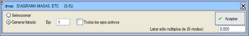
PROJE menüsünden hesaplama yapıldığında ve hacimleri yansıtmak için bir güzergah tanımlanmışsa, dmastot.res raporu da oluşturulur. Bu rapor, hacimleri yansıtmak için kullanılan güzergahın dmas.res raporuna benzer, ancak tüm güzergahların ve birleşim yerlerinin birleşik toprak hacimleri diyagramını içeren bir sütun eklenir. Bu raporun son özetinde, malzemelere göre hacimler de tüm aktif güzergahlara karşılık gelir. Toplam Yüzdeler Bu raporu oluşturmak için, şimdi başlangıç bilgilerini (Toplam özet ve sıfır olmayan metrajlı güzergahlara göre) içeren bir cvpro.res dosyası oluşturan projenin önceden hesaplanması gerekir. Toplam yüzdeler raporunu oluşturmak için hangi metrajları işlemek istediğimizi, uygulanacak yüzdeyi seçebiliriz, hatta başlangıç toplam hacmini değiştirmemize bile izin verilir. Ağırlık Merkezlerine Göre Metraj Bu rapor, seçilen güzergahın ağırlık merkezlerine göre dengelenmiş bir metrajını oluşturur. Rapor, KM'leri, bir önceki KM'ye olan mesafeyi, her KM'deki yarıçapı gösteren sütunlar içerir ve ardından her bir malzeme (Üstyapı, uygun olmayan zemin, dolgu vb.) için enkesitte kapladığı alanı, ağırlık merkezinin eksene olan mesafesini, düzeltilmiş enkesitler arası mesafeyi ve ara ile toplam hacmi listeler. Ek bir sütun, hacimlerden herhangi birinde prizmatoid yöntemiyle metraj kullanılıp kullanılmadığını gösterir. Bitki Toprağı Sıyırma BİTKİ TOPRAĞI SIYIRMA raporu (desbr.res), yarma ve dolgudaki bitki toprağı sıyırma işinin, planda ve gerçek yüzeyde, sol ve sağ kamulaştırma genişliklerini içeren desbr#.res dosyasını (# güzergah numarasıdır) listeler. İlgili güzergahın yeniden metrajlandırılması sırasında oluşturulur, ve raporun oluşturulması için başlangıç ve bitiş KM'leri verilebilir (başlıkta görünecektir), ayrıca enkesitler arasındaki ara alanların da listelenmesi belirtilebilir: 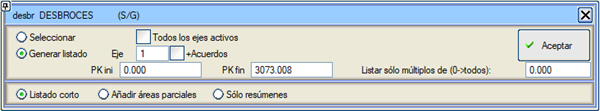
Tüm aktif güzergahlar için bitki toprağı sıyırma raporu belirtilmesi durumunda, başlangıçta toplam toplamı içeren bir özet eklenir ve ayrıca, aktif güzergahlardaki kesişim birleşim yerlerinin bitki toprağı sıyırmaları da dahil edilir. Bir güzergahın raporu oluşturulduğunda, raporun o güzergahta tanımlanmış tüm kesişim ve dönel kavşak birleşim yerlerini içermesi de seçilebilir. Bir N güzergahı için, desbrN.res raporu oluşturulur. Ayrıca sadece özet raporu oluşturmak da mümkündür. Bitki Toprağı Sıyırma ve Şev Düzeltme Alanları BİTKİ TOPRAĞI SIYIRMA VE DÜZELTME raporu (areastot.res), her bir güzergah için bir satır ve toplamlar için başka bir satır içeren sekmeli bir rapordur ve aşağıdaki metrajları içerir:
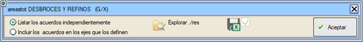
Seçim yapabilirsiniz:
Uzunluklara Göre Alanlar UZUNLUKLARA GÖRE ALANLAR raporu (areas.res), enkesitteki uzunlukları ve hem yatay hem de eğimli alanları hesaplar. Hesaplamayı yapmak için güzergah numarası, başlangıç KM, bitiş KM, yüzey, taraf ve iki kod istenir. İki nokta arasındaki kot farkının önceden belirlenmiş iki değerden (dZmax ve dZmin) daha düşük veya daha yüksek olması durumunda ölçüm yapmama imkanı verilir. Ayrıca ölçümü iyileştirmek için ağırlık merkezini kullanma imkanı da verilir. Bu raporu .res ve .xlsx formatında elde etmek mümkündür.  ******************************************************************************************** * * * ALANLAR VE UZUNLUKLAR * * * * * * * * * ******************************************************************************************** 2.0 11.0 ----------------- ------------------ KM ENKESİTTEKİ UZUNLUK ARA ALANLAR TOPLAM ALANLAR ------------------------- ------------------------- ------------------------- GERÇEK UZUN. 2D UZUN. GERÇEK ALAN 2D ALAN GERÇEK ALAN 2D ALAN ----------- ------------ ------------ ------------ ------------ ------------ ------------ 0.000 2.508 2.500 0.000 0.000 0.00 0.00 15.000 2.508 2.500 37.620 37.500 37.62 37.50 30.000 2.508 2.500 37.620 37.500 75.24 75.00 45.000 2.508 2.500 37.620 37.500 112.86 112.50 60.000 2.508 2.500 37.620 37.500 150.48 150.00 75.000 2.508 2.500 37.620 37.500 188.10 187.50 90.000 2.508 2.500 37.620 37.500 225.72 225.00 105.000 2.508 2.500 37.620 37.500 263.34 262.50 120.000 2.508 2.500 37.620 37.500 300.96 300.00 135.000 2.508 2.500 37.620 37.500 338.58 337.50 150.000 2.508 2.500 37.620 37.500 376.20 375.00 165.000 2.508 2.500 37.620 37.500 413.82 412.50 180.000 2.507 2.500 37.615 37.500 451.43 450.00 195.000 2.504 2.500 37.588 37.500 489.02 487.50 210.000 2.502 2.500 37.549 37.500 526.57 525.00 Bitkilendirme Alanları BİTKİLENDİRME ALANLARI raporu (siembra.res), ŞEV DÜZELTME ALANLARI raporuna benzer, ancak sadece yarma veya dolgu şev yüzeylerini listeler. Raporlarda sağ ve sol tarafın metrajları ayrılır ve ayrıca yarma ve dolgudaki toplam alanı gösteren ilk bir sütun da gösterilir. Aktif gruplarda bulunan tüm güzergahları içeren tek bir siembratot.res veya siembra.res raporu oluşturma imkanı vardır. Ayrıca raporu hesap tabloları için .xlsx formatında oluşturmak ve başlıkları düzenlemek de mümkündür.
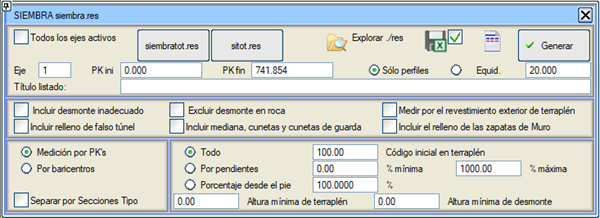
Bitkilendirme alanları iki şekilde hesaplanabilir:
Dolgudaki başlangıç kodu, dolgudaki alanı ölçmek için bir başlangıç kodu belirler. Varsayılan olarak 100'dür (subrasante drenajı). Kod mevcut değilse, hemen altındakinden ölçülecektir. Raporun aşağıdaki seçenekleri vardır:
Birleşik Raporlar firmetot.res Bu raporlar arasında, güzergahlara göre üstyapı özetlerini içeren firmetot.res bulunmaktadır. firmejes.res Güzergahlara göre üstyapı katmanlarının metrajı. firmegru.res Gruplara göre üstyapı katmanlarının metrajı.
Üstyapı Astar Alanları ASTAR ALANLARI raporu (riegos.res), istenen üstyapı bileşeninin veya belirtilen seçilmiş malzeme katmanının astar alanlarını sunar. Belirli bir katman, subrasante veya mevcut tüm katmanlar için oluşturulabilir. Bu raporlarda katmanların gerçek genişlikleri de yer alır. Ayrıca, sadece her bir güzergahın özetlerini listelemek de mümkündür. 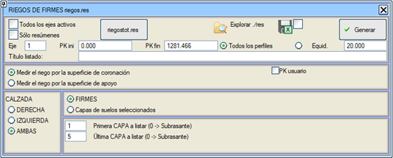
Üstyapı astarları şu şekilde ölçülebilir:
Bu tercihler, Yapılandırma → Tercihler → Lineer Proje → Boykesit → Astarı alt yüzeyden ölç'den de değiştirilebilir ve kaydedilebilir. Seçilmiş malzeme katmanları için astar raporu istendiğinde (ilk katman = -1), astarlanması istenmeyen katmanlar devre dışı bırakılabilir. Raporun taşıt yollarından biri için çıkarılması durumunda, ayrıca riego#D.res veya riego#I.res raporu da oluşturulur (tarafa ve # güzergah numarasına bağlı olarak). Tüm aktif güzergahlar için rapor oluşturulduğunda, aktif gruplarda bulunan tüm güzergahların astar yüzey metrajlarının ardışıklığını içeren riegos.res dosyası oluşturulur. Eş zamanlı olarak, sütunlarında güzergah numarası, katman, katman adı, KM veya kullanıcı KM'si, genişlik, ara alan ve birikimli katman alanı bulunan, rg0.res adında sekmeli bir rapor oluşturur. Bu dosya, herhangi bir hesap tablosu tarafından hızla içe aktarılabilir. [riegostot.res] butonu, raporu o adla ve areastot.res tarzında sütunlu olarak oluşturur. Ara alanlar, yazdırılmasalar bile tüm ara enkesitleri dikkate alır. Sonunda katmanlara göre bir özet yazdırılır. Eğer proje daha önce hesaplanmışsa, bu rapor güzergahla tanımlanan kesişim birleşim yerlerinin astar alanlarını da içerir. Tüm aktif güzergahlar için oluşturulan raporda, kesişim ve dönel kavşak birleşim yerlerinin astarları ayrıca eklenir. Bu raporda, seçilmiş malzeme katmanları için, her bir güzergahta kesişim ve dönel kavşaklarda tanımlanmış olan birleşim yerlerindeki metrajlar da dahil edilir. Seçilmiş malzeme katmanları için astarlar seçildiğinde, ölçüm üst yüzeyden veya alt yüzeyden de ayırt edilebilir. Ancak üstyapı katmanlarından farklı olarak, seçilmiş malzemelerde:
Bu raporda diyalog kutusu açıldığında, Gerçek Kesit penceresi ilgili üstyapı kesitini gösterir. Şev Düzeltme Alanları ŞEV DÜZELTME ALANLARI raporu (refino.res), düzeltme maliyetini değerlendirmek için yarma ve dolgu şevlerinin alanlarını ve uzunluklarını listeler. Sağ veya sol tarafın veya her iki tarafın birlikte kısmi raporları oluşturulabilir. Rapor ayrıca, KM eşitliklerinden türetilen kullanıcı KM'sini içeren bir sütun da gösterir. 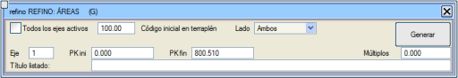
Tüm güzergahlar için bir rapor istendiğinde, kesişim birleşim yerleri de dahil edilir ve toplamları içeren bir sayfa eklenir. Geotekstil Alanları GEOTEKSTİL ALANLARI raporu (areag.res), yüzeylerin enkesitteki uzunluklarını, ara alanını ve toplam alanını içeren bir rapor oluşturur. 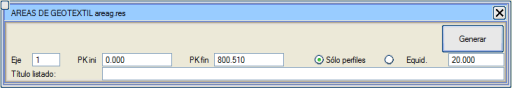
Bu rapor iki tür yüzeye dayanır: Alt yüzey, zayıf zemin kazısı taban çizgisini temsil eden L87 çizgi tipiyle ve üst yüzey, drenaj tabakası çizgisine karşılık gelen L89 tipiyle temsil edilir. Uzunluk, her iki yüzeyin ayrı gittiği bölgelerde ölçülür. Kaya Şev Alanları KAYA ŞEVLERİ raporu (arear.res), farklı kaya katmanlarının veya sağlam arazinin şev yüzeylerini ölçmeyi sağlar. Raporun başlık metinlerini düzenleyebilir ve ayrıca .res veya .xlsx formatında elde edebiliriz. 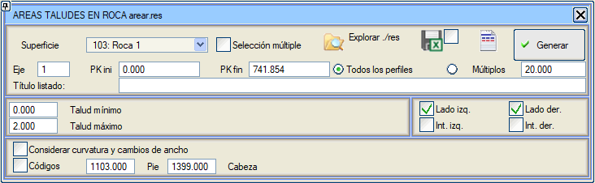 Mevcut 20 kayayı analiz etmeye izin verir. Çoklu seçimi etkinleştirerek aynı rapora aynı anda birkaç kaya dahil edebiliriz.
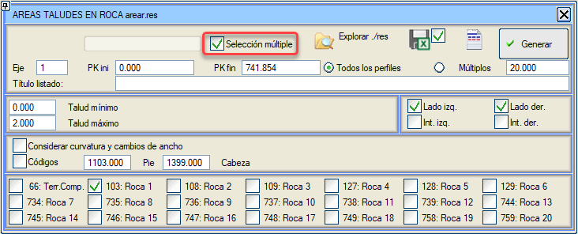Dolgu Tabakası Alanı DOLGU TABAKASI ALANI raporu (areat.res), tabakaların yüzey alanının tam bir raporunu göstermeyi sağlar. 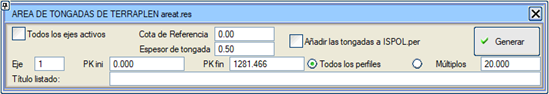 Program, her bir enkesite her bir tabakanın geometrisini ekleyecek, dosyada bulunan metraj tablosunu ISPOL+Malzemeler.dar adlı bir birleşik tabloyla değiştirecek, dosyayı yeniden metrajlandıracak (böylece her tabakanın hacimleri cvol.res'e eklenecek) ve BIM modeli oluşturulduğunda bu yeni malzemeler de görünecektir. ISPOL.per dosyasına tabakaları dahil etme seçeneği etkinleştirildiğinde, güzergahın tamamını kapsamayan bir KM aralığı seçilmişse, seçilen aralığın dışındaki enkesitler, içerikleri değiştirilmeden ISPOL.per dosyasında korunur. Bir referans kotu tanımlama imkanı, böylece tabakaların kotları bu değerin alt katları olur. Örn. Zref=1011 ve Kalınlık=2.5 verirsek, şu kotlara sahip olabiliriz: 1001., 1003.5, 1006., 1008.5, 1011., 1013.5,... |